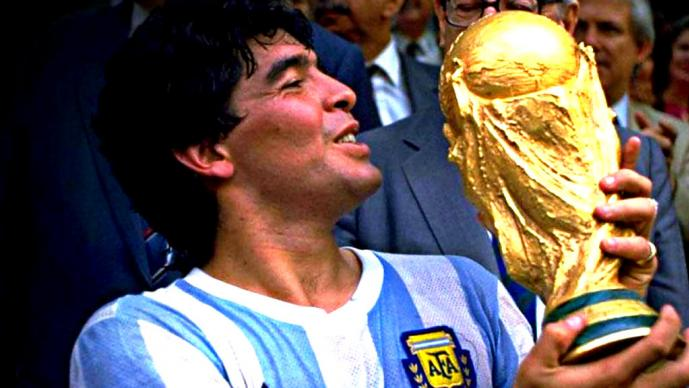

La Copa Mundial de la FIFA México 1986 fue la decimotercera edición de la Copa Mundial de Fútbol, que se desarrolló en México, entre el 31 de mayo y el 29 de junio de 1986. En dos partidos de los cuartos de final del torneo sucedieron hechos destacados y sin precedentes en el fútbol: en el partido Argentina - Inglaterra, Diego Armando Maradona (que en el primer tiempo fue golpeado duramente con un codazo por Terry Butcher, que el árbitro no vio) convirtió dos de sus goles más famosos, uno que consiguió tocando el balón con la mano que el árbitro dio por legal y que el mismo jugador aceptó después al afirmar que había sido La mano de Dios; minutos después Maradona zarpó desde media cancha burlando a cuanto adversario se cruzaba en su camino consiguiendo de esta forma el mejor gol de los mundiales y uno de los mejores en la historia del fútbol, conocido como el Gol del Siglo; por su parte en el partido Brasil - Francia, Bruno Bellone erró un penal al estrellarse contra el poste, pero al rebotar el balón sobre el cuerpo del arquero Carlos Gallo entró al arco, siéndole concedido el gol. Los brasileños protestaron para que fuera anulado el gol pero el árbitro rumano Ioan Igna se ratificó en su decisión, que posteriormente fue avalada por la International Board.
